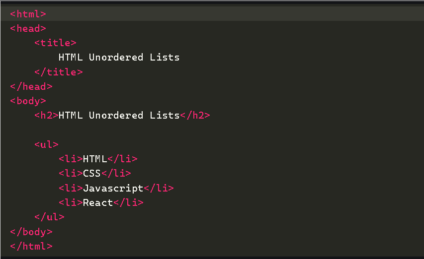
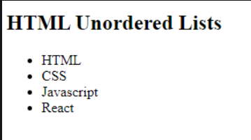
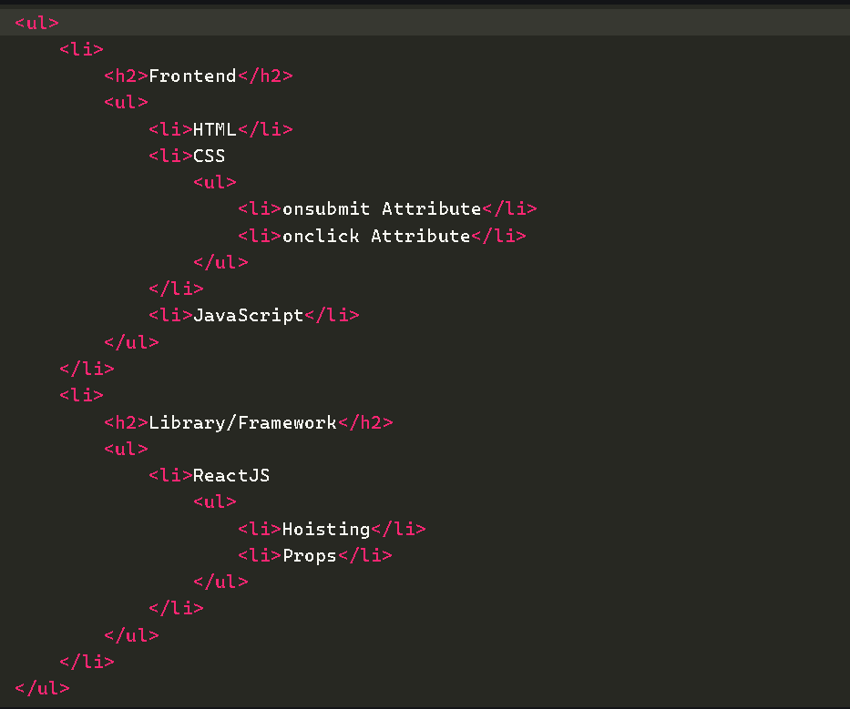
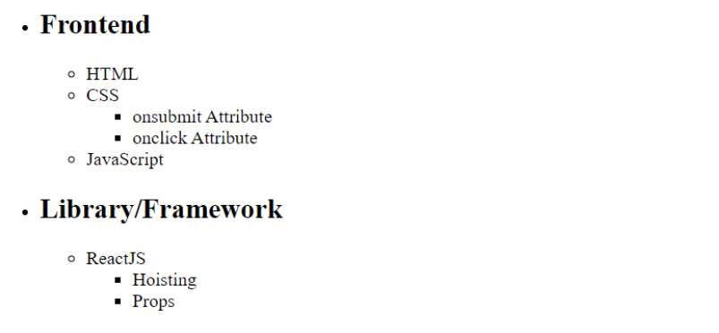
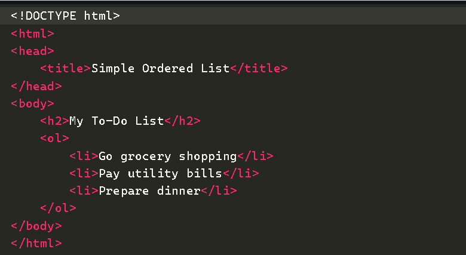
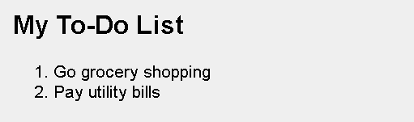

An HTML List allows you to organize data on web pages into an ordered or unordered format to make the information easier to read and visually appealing. HTML Lists are very helpful for creating structured, accessible
content in web development.
There are three main types of lists in HTML:
Unordered Lists (<ul>): These lists are used for items that do not need to be in any specific order. The list items are typically marked with bullets.
Ordered Lists (<ol>): These lists are used when the order of the items is important. Each item in an ordered list is typically marked with numbers or letters.
Unordered lists are ideal for scenarios where the sequence of the items is not important.
The unordered list items are marked with bullets, also known as bulleted lists. An unordered list starts with the <ul> tag, and each list item begins with the <li> tag.
Code:

Output:

An unordered list in HTML is a collection of items represented by bullet points, providing a flexible way to display information without a specific order.
Code:

Output:

Ordered lists are used when the items need to follow a specific sequence.
In an ordered list, all list items are marked with numbers by default. An ordered list starts with the <ol> tag, and each list item begins with the <li> tag.
Code:

Output:
